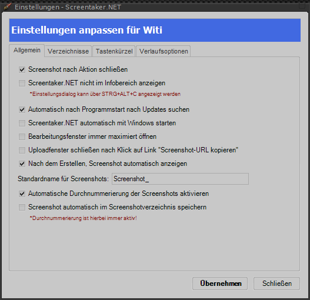
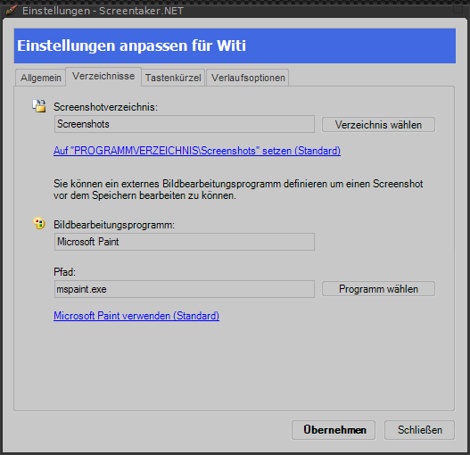
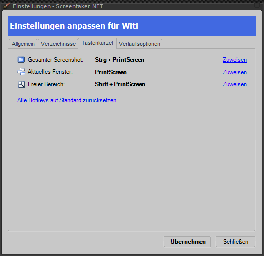
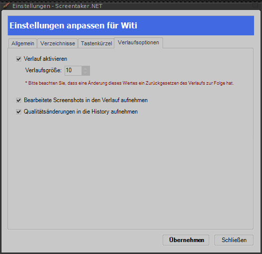

Einstellungsfenster
Das Einstellungsfenster verhilft Ihnen Screentaker.NET nach Ihrem besten Wissen und Gewissen anzupassen. Es teilt sich in insgesamt vier Bereiche: Allgemein, Verzeichnisse, Tastenkürzel, Verlaufsoptionen.
Allgemein
Abbildung 10: Einstellungen - Allgemein
Verzeichnisse
Abbildung 11: Einstellungen - Verzeichnisse
Tastenkürzel
Abbildung 12: Einstellungen - Tastenkürzel
Verlaufsoptionen
Abbildung 13: Einstellungen - Verlaufsoptionen